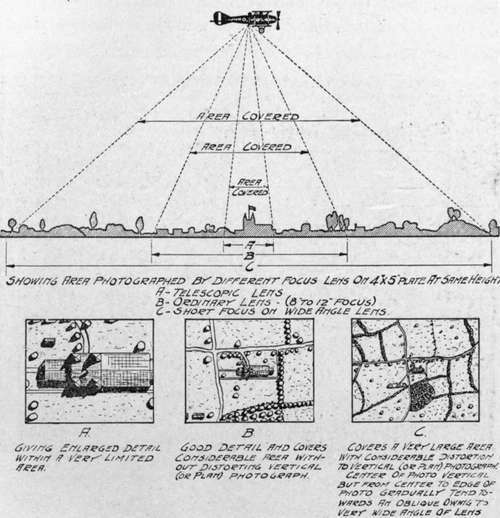

VI. Practical Problems And Data. Chapter XXV. Spotting
Description
This section is from the book "Airplane Photography", by Herbert E. Ives. Also available from Amazon: Airplane photography.
VI. Practical Problems And Data. Chapter XXV. Spotting
" Spotting," as distinct from mapping or from the photography of continuous strips, is the photography of a definite individual objective. In military work spotting or "pin pointing" includes the photography of particular trenches or pivotal points in a trench system before an attack (Fig. 123), of roads or bridges along which an advance must pass (Fig. 124), of batteries or big guns which are the subject of artillery fire (Fig. 125), both before and after their bombardment (Fig. 126), of gun puffs or exploding bombs (Fig. 131).
The technique of spotting consists largely in getting properly over the target and then securing the exposure at just the right moment. This is chiefly a question of proper piloting; but the aid which can be offered to the pilot by camera auxiliaries designed particuarly for spotting needs is very large.
Discussion of the task of the pilot who must steer a photographic plane accurately over a previously selected point of interest cannot be undertaken without raising the question of who should take the picture, pilot or observer? In the English service the most general practice was for the pilot to be charged with the responsibility both of covering the objective and of exposing. If a propeller drive was used on the camera, this left to the observer only the task of changing magazines. If the camera was hand operated the plates were changed either by the observer, or else, as was frequently the case, distance operating devices were attached, so that the pilot even then did everything except change the magazines, and the observer was kept free to watch the sky for enemy aircraft. A very desirable adjunct to the camera when plates are shifted automatically or by the observer is a distance indicator, to show the pilot when the shutter is set. Electrical indicators for this purpose have been devised.
Fig. 123. - Low view of trenches on the Yser, showing concrete structure undamaged by bombardment.
Fig. 124. - The Piave River. To left, destroyed bridge, to right, pontoon bridge under construction.
Italian aerial photographic service.
Fig. 125. - Showing big gun hidden in forest. (Upper left-hand corner).
If the camera is completely hand operated, as were most of those in the French and German services, there is little choice but for the observer to perform the entire operation. The exposing operation could have been delegated to the pilot, but such was not the custom with the French or with the American squadrons using French apparatus. In this method of operation the observer depends on the pilot to get the plane over the target, while the pilot depends on the observer to get the picture when the target is covered. Ample opportunity is thus offered for misunderstanding and disagreement. This can be avoided only by excellent sights properly aligned, for both pilot and observer, and by some means of communication between the two men concerned.
Fig. 126. - Example of spotting. Battery before and after bombardment.
The simplest means of communication is of course direct conversation. But this is only possible in those planes, such as the DH 9, in which pilot's and observer's cockpits are immediately together, so that, by shouting, any desired information can be conveyed with fair ease. When the distance is increased to four or five feet, as in the DH 4, the loudest shouts are totally lost in the roar of the engine and the blast of the wind. Speaking tubes and telephones are now fairly good, but are none too comfortable or convenient to have strapped on one's head and face. A primitive device used to some extent in the war was merely a pair of reins attached to the pilot's arms, by which he could be directed which way to steer. There is much to be said for a simple semaphore system, where an indicator in the observer's cockpit actuates a similar dial in front of the pilot, indicating "right" or "left," "picture obtained," "try again," etc. If the observer has a sight by which he can see far enough ahead to correct the pilot's error of pointing, the need for an accurate sight for the pilot is diminished.
Fig. 127. - Photograph, made with long focus lens to determine the results of aerial bombing. The "Tirpitz" battery of long range naval guns directed on Dunkirk.
Fig. 128. - Diagram showing relationship between focal length and area covered by plate.
In considering the question of sights, attention may again be called to the poor "visibility" from the pilot's seat in the present prevailing type of two-seater tractor plane.
Fig. 129. - Diagram giving data on area covered at various altitudes by representative lens.
Blind directly in front, beneath, and to either side (Figs. 7, 8 and 9), it is no unusual thing for a pilot to entirely miss an objective, such as a railway line, which he can only estimate to be beneath him by judging its distance from those objects to either side which he can actually see. The English practice of leaving a clear space of six inches to a foot between the fuselage and the beginning of the wing fabric, allows the pilot to look down over the side, a decided advantage. But for photographic purposes nothing can compare with a good negative lens carrying fore and aft lines or wires, so that the pilot can see his object ve in ample time to head directly for it. The lens should either be large enough so that its rear edge gives the view directly downward, or supplemented by an additional lens pointing directly down, so that the covering of the target is assured. To locate such a lens in the front cockpit, free of all controls, is a very hard task; even so its view is likely to be badly interrupted by the landing gear. Nevertheless, so important is it, both in photography and in he takes the picture), the observer's lens needs both an accurate center mark and an additional upper or lower sighting point. Accurate alignment of these marks with the camera axis must be arranged for in precise spotting.
Fig. 130. - Burchall Slide Rule, for calculating intervals between exposures, and for other aerial photographic data.
Fig. 131. - Àerial bombardment of Trieste Note falling bombs in center of picture; and exploding anti-aircraft shells over the water.
Italian official photograph.
Fig. 132. - Example of spotting requiring exposure at exact instant. Explosion following burst of bomb in ammunition dump.
British official photograph.
Accurate spotting work requiring the delineation of fine detail calls for cameras of considerable focal length. The camera of longest focal length used in the war was the French 120 centimeter (Fig. 41). This was employed with great success in such work as regulating the fire of heavy railway bombing, to have a sight by which the plane can be accurately directed that designers of planes should recognize this need and make every effort to provide a suitable location.
Sights for the observer have been discussed already. Here again the negative lens is to be preferred, but while the pilot's lens needs only directing lines in the axis of the plane (unless guns brought into range only at night, to fire a few shots at chosen angles. Photographs taken the next day would then show the exact spot where each shell fell, and the damage it did, to serve as a guide for the next night's operations (Fig. 127). The field of these cameras is quite small—8 to 12 degrees—and so not only must sighting be exact but the area covered on the ground must be accurately known. This is to be calculated from the altitude, focal length, and plate size, by the relation— distance on ground _ altitude plate length focal length.
Fig. 133. - The same subject a few minutes later. Height of smoke shown by shadow. British official photograph.
Data derived from such calculations may be incorporated in tables, or graphically in diagrams such as Figs. 128 and 129.
These calculations and others required in mapping and stereo-work are simply and quickly made by slide-rule devices. One of these, the Burchell Photographic Slide Rule, developed in the English service, is shown in Fig. 130. This consists of two dials, the center one of which is mounted— usually by a pin pushed into a cork behind—so as to turn freely, to permit its being set for altitude, focal length, ground speed, plate size, etc., whereupon the area covered, or the appropriate interval between exposures may be read off.
Cameras for spotting work should be capable of exposure at the exact moment desired. For if the camera is ever to catch the gun as it discharges, the bomb as it falls (Fig. 131), or the shell as it explodes (Fig. 132), the photograph must be taken within the instant. Automatic cameras, exposing at regular intervals, while adequate for mapping, are not fitted for many kinds of spotting.
Continue to:
- prev: Developing And Drying Prints
- Table of Contents
- next: Chapter XXVI. Map Making. Technique Of Negative Making
Tags
camera, lens, airplane, aerial, film, exposure, photography, maps, birdseye